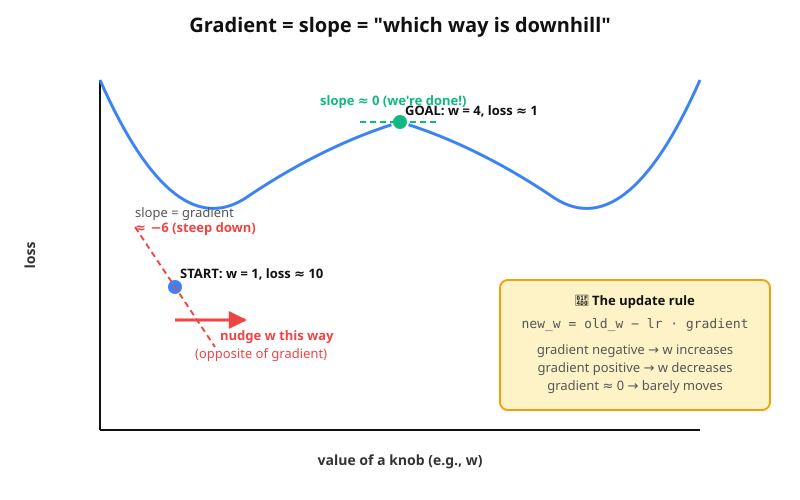

A deeper look at what loss.backward() and opt.step() actually do. After this you'll never see them as "magic" again.
In Model A we use Mean Squared Error:
(prediction − truth)Walking through step 0 with the actual numbers. At step 0, w = 0 and b = 0. So the model predicts y_pred = [0, 0, 0, 0, 0]. The truth is y_true = 2x + 1 = [3, 5, 7, 9, 11]:
| x | y_pred | y_true | error | error² |
|---|---|---|---|---|
| 1 | 0 | 3 | −3 | 9 |
| 2 | 0 | 5 | −5 | 25 |
| 3 | 0 | 7 | −7 | 49 |
| 4 | 0 | 9 | −9 | 81 |
| 5 | 0 | 11 | −11 | 121 |
Sum: 9 + 25 + 49 + 81 + 121 = 285. Mean: 285 / 5 = 57. ✓ matches the program's output: step 0 ... loss = 57.000.
The loss is one number. Each knob is a separate number. So the loss is a function of all the knobs. Imagine it as a hill:

The gradient is just the slope of that hill — measured separately for each knob. For knob w, the gradient answers: "if I increase w by 1, how much does loss change?"
That's where the update rule comes from:
new_w = old_w − learning_rate × gradientThe minus sign is "go opposite to the gradient" (because we want loss down). The learning rate controls step size.
For our specific loss mean((w·x + b − y_true)²), the gradients work out to:
gradient w.r.t. w = mean( 2 × error × x )
gradient w.r.t. b = mean( 2 × error )At step 0:
| x | error | 2 × error × x | 2 × error |
|---|---|---|---|
| 1 | −3 | −6 | −6 |
| 2 | −5 | −20 | −10 |
| 3 | −7 | −42 | −14 |
| 4 | −9 | −72 | −18 |
| 5 | −11 | −110 | −22 |
gradient_w = mean(−6, −20, −42, −72, −110) = −250 / 5 = −50
gradient_b = mean(−6, −10, −14, −18, −22) = −70 / 5 = −14Applying the update rule with lr = 0.05:
new_w = 0 − 0.05 × (−50) = +2.5
new_b = 0 − 0.05 × (−14) = +0.7Now compare to the actual output:
step 0 | w = 2.500 | b = 0.700The full interactive demo lives at this page — open it in a new tab. You'll see:
(w, b) that you can drop anywhere by clicking.▶ Open the interactive gradient descent demo
(0,0) to (2, 1).In Model A, PyTorch tracked 2 gradients. In Model B, 12. In Lesson 4's Transformer, thousands. In PRAGMA-Large, 1,000,000,000. Same loss.backward(). Same opt.step(). Just more numbers.
This is the magic of automatic differentiation (autograd): you write the forward computation (predict + loss), and PyTorch computes the backward gradients automatically using the chain rule. You never derive a single derivative.